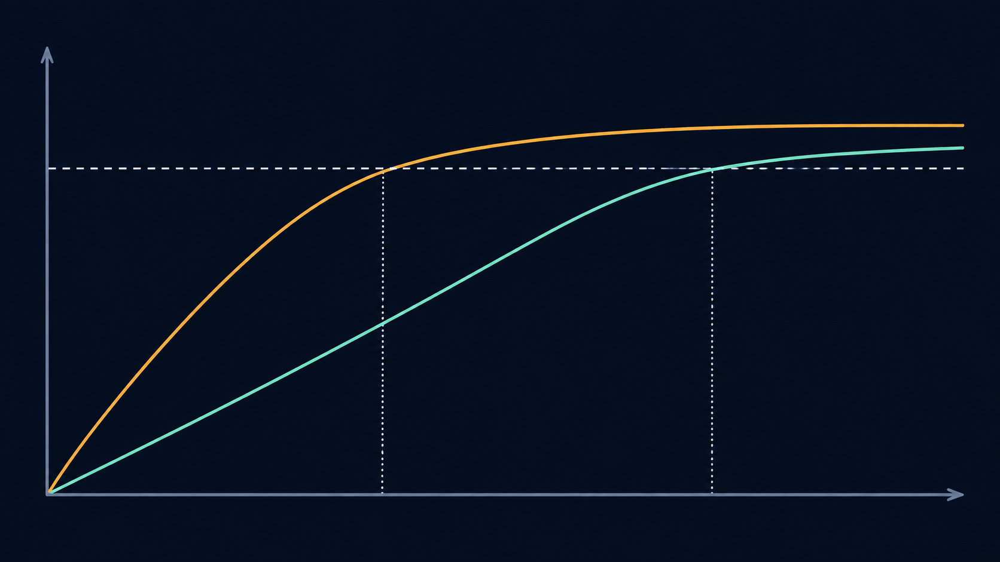

Member
The clip belongs to the target model’s training set.
ICASSP 2026 · Oral · Information Forensics and Security
Membership Inference Attack Against Music Diffusion Models via Generative Manifold Perturbation
We replace a noisy endpoint signal with a behavioral stability score: the minimum time-normalized latent perturbation required to cross a fixed perceptual degradation threshold.
Xi’an Jiaotong-Liverpool University, Suzhou, China
01
Audit question
Given a candidate audio clip and an audited music diffusion model, estimate whether the clip was used during training.
Member
The clip belongs to the target model’s training set.
Non-member
The clip was not included in the target model’s training set.
02
Background bridge
Before discussing membership, we need one piece of background: a diffusion model learns to reverse a gradual noising process.
x0
Add Gaussian noise according to timestep t
xt
Rt(·; θ)
x̂0
Forward process
xt = √ᾱtx0 + √(1−ᾱt)ε, ε∼𝒩(0,I)
The forward process mixes clean audio with Gaussian noise according to timestep t. A trained diffusion model learns a reverse mapping that progressively removes this noise.
Reverse mapping
x̂0 = Rt(xt; θ)
LSA-Probe does not only inspect the final reconstruction error. It intervenes at an intermediate state and observes how stable the learned reverse mapping is around that candidate.
The paper finds the strongest membership separation around the middle of the reverse trajectory, with t_ratio=0.6 used in the main setting. This is an experimental finding in the evaluated settings, not a universal property of every diffusion model.
Method in one glance
Replace a noisy single reconstruction signal with the minimum intervention required to destabilize the local reverse process.
Scale the perturbation by the natural forward-noise level so that budgets are comparable across diffusion timesteps.
Use inner PGD to search for a degradation direction and outer bisection to find the smallest successful budget.
The resulting score does not require an explicit likelihood or a separately trained shadow model.
03
Access assumptions
LSA-Probe is designed for a developer or authorized auditor who can inspect and differentiate through the model’s reverse process.
04
Why the baseline is weak
A single reconstruction loss is a noisy endpoint observation, especially in the strict low-FPR regime that matters for high-cost audits.
Reconstruction error changes with the diffusion state.
Injected noise and sampling choices alter the endpoint.
Timbre and musical complexity can confound raw loss.
Waveform MSE need not track what listeners perceive.
Instead of asking whether one reconstruction has a small error, LSA-Probe asks how much worst-case, time-normalized intervention is required to destabilize the local reverse process.
Correct diffusion-time direction
05
Latent stability hypothesis
Training members empirically occupy more stable local regions of the learned reverse mapping. They require a larger bounded perturbation to reach the same perceptual degradation target.

x̂0 = Rt(xt; θ)
x̂0δ = Rt(xt + δt; θ)
Rt(xt+δt;θ) ≈ Rt(xt;θ) + JRt(xt)δt
The local Jacobian describes how sensitive the reverse mapping is to a small intervention around the candidate state. If the learned mapping is locally smoother around a training member, the same perturbation budget produces less output degradation. Reaching the fixed threshold τ therefore requires a larger budget, producing a larger Cadv.
Lower local sensitivity → larger required budget → higher Cadv → more member-like
A critical distinction
D(x̂0, x̂0δ) ≥ τ
Defines the degradation target. It is calibrated as P95 on an independent non-member development set at ηref=0.05. It is not the membership cutoff.
Measures the minimum time-normalized budget required to reach τ for each candidate.
A separate cutoff on Cadv defines the operating point, such as FPR=1%, and yields TPR@1% FPR.
06
Two-loop adversarial probe
The method searches for a strong local degradation direction at each budget, then finds the smallest successful budget.
Forward diffuse the candidate to an intermediate state.
Inject a time-normalized bounded perturbation.
Use inner PGD to find the strongest degradation direction.
Use outer bisection to find the minimum successful budget.
δt = σt δ̃ σt = √(1−ᾱt)
The raw scale of an intervention is not comparable across diffusion timesteps because the forward noise variance changes with t. Scaling δ̃ by σt places the perturbation on the timestep’s natural noise scale.
Algorithm walkthrough · Illustrative control flow · Not a measured sample
Ready. Start with the full admissible interval.
DiffWave
MusicLDM
x̂0 = Dec(Rt(zt; θ))
x̂0δ = Dec(Rt(zt + σtδ̃; θ))
07
Published aggregate results
All values below are transcribed from Table 1. No per-sample distributions or ROC points are reconstructed.
Membership auditing is a high-cost decision problem. When the non-member population is much larger than the member population, even a seemingly small false-positive rate can produce many false alerts. The operating point must therefore control false positives before recall is interpreted.
Illustrative arithmetic—not a paper experimentAmong 10,000 non-members, an FPR of 1% corresponds to approximately 100 false positives.
| Method | Signal | Limitation or difference from LSA-Probe |
|---|---|---|
| Endpoint loss | Denoising or reconstruction loss measured at a timestep or at the endpoint. | A single loss can be confounded by timestep, noise seed, content complexity and perceptual mismatch. |
| Trajectory / PIA / PIAN | Distance between a recovered diffusion-trajectory point and the model-predicted trajectory point. | Measures trajectory mismatch rather than the minimum worst-case intervention required to cross a perceptual threshold. |
| SecMI | A diffusion-process membership signal used as an existing comparison baseline. | Does not use LSA-Probe’s time-normalized adversarial-cost construction. |
| LSA-Probe | The minimum time-normalized perturbation budget required to exceed a fixed perceptual degradation threshold. | Measures local generative stability using inner PGD and outer bisection. |
All baselines were matched within ±5% per-sample wall-clock time on an A100-80GB.
Evidence Explorer
A controlled view of the same four Table 1 rows.
Verified evidence data could not be loaded. The page will not manufacture a replacement.
| Model | Dataset | Best Baseline TPR@1% / AUC | LSA-Probe TPR@1% / AUC | Δ TPR | Δ AUC |
|---|---|---|---|---|---|
| MusicLDM | MAESTRO | 0.10 (0.07–0.12) / 0.58±0.02 | 0.13 (0.10–0.15) / 0.61±0.03 | +0.03 | +0.03 |
| MusicLDM | FMA-Large | 0.08 (0.05–0.10) / 0.56±0.01 | 0.14 (0.10–0.16) / 0.59±0.02 | +0.06 | +0.03 |
| DiffWave | MAESTRO | 0.12 (0.09–0.15) / 0.63±0.02 | 0.20 (0.16–0.24) / 0.67±0.02 | +0.08 | +0.04 |
| DiffWave | FMA-Large | 0.11 (0.08–0.14) / 0.62±0.02 | 0.18 (0.14–0.22) / 0.66±0.02 | +0.07 | +0.04 |
Published Figure 2
These are the original embedded raster panels extracted from the supplied paper PDF, not reconstructed curves.
08
Reliability and limitations
The evaluation spans waveform and latent diffusion, two music domains, leakage controls, uncertainty estimates and compute-matched baselines.
Models
DiffWave · waveform DDPM
MusicLDM · VAE latent diffusion
Datasets
MAESTRO v3 · solo piano
FMA-Large · multi-genre music
Main setup
Deterministic DDIM · t_ratio=0.6 · p=2 · ηmax=0.8 · CDPAM · 22.05 kHz training audio · in-graph resampling to 16 kHz for metrics.
Split controls
Piece/artist splits for MAESTRO; track/artist splits for FMA; Chromaprint + LSH duplicate and cover checks with manual review.
Statistical protocol
DeLong AUC intervals; sample-level bootstrap elsewhere; 10,000 resamples; Holm–Bonferroni correction.
Compute accounting
B=10 outer × K=12 inner, roughly (K+2)B reverse passes per sample; baselines matched within ±5% wall-clock on an A100-80GB.
Scientific boundary
Future evaluation
Deduplication, artist-aware splitting and provenance control reduce accidental duplication and leakage, but do not by themselves guarantee the absence of memorization.
Regularization, early stopping, audit-aware training and differential privacy are potential directions for reducing membership leakage.
LSA-Probe requires parameters, intermediate states and gradients. Restricting access changes the practical threat surface, although it does not eliminate the underlying memorization risk.
A meaningful defense evaluation must consider an auditor or attacker who knows the defense and can recalibrate the probe, threshold or optimization procedure.
09
Future direction
A methodological transfer, not an experimental result of LSA-Probe.
LSA-Probe
Define the protected training-data asset
Agent Safety
Define protected user data, memory, retrieved content and tool permissions
LSA-Probe
Specify white-box developer-side access
Agent Safety
Build authorized internal red-team and audit infrastructure
LSA-Probe
Measure the minimum intervention needed to destabilize a trajectory
Agent Safety
Measure the minimum bounded intervention needed to change a decision or tool action
LSA-Probe
Evaluate at strict low-FPR operating points
Agent Safety
Control false alarms before blocking legitimate tasks or users
LSA-Probe
Treat membership as statistical evidence
Agent Safety
Preserve audit trails and uncertainty rather than issuing absolute claims
What transfers
Asset definition, authorized access, bounded intervention, strict operating points and uncertainty-aware audit trails.
What does not transfer directly
Audio latents are not LLM hidden states; diffusion trajectories are not agent plans. LSA-Probe does not detect prompt injection, stop jailbreaks, solve tool authorization, provide trusted execution or establish effectiveness for mobile agents.
10
Paper and resources
The public repository currently exposes a project README rather than a complete implementation or checkpoints.
BibTeX
@inproceedings{liu2026membership,
title={Membership Inference Attack Against Music Diffusion Models via Generative Manifold Perturbation},
author={Liu, Yuxuan and Zhang, Peihong and Sang, Rui and Li, Zhixin and Tan, Yizhou and Cai, Yiqiang and Li, Shengchen},
booktitle={2026 IEEE International Conference on Acoustics, Speech and Signal Processing (ICASSP)},
year={2026}
}Audit question
Given a candidate audio clip and an audited music diffusion model, estimate whether the clip was used during training.
Background bridge
x0
+ ε
xt
Rt
x̂0
xt = √ᾱtx0 + √(1−ᾱt)ε
x̂0 = Rt(xt; θ)
Access assumptions
Why the baseline is weak
Reconstruction error changes with the diffusion state.
Injected noise and sampling choices alter the endpoint.
Timbre and musical complexity can confound raw loss.
Waveform MSE need not track what listeners perceive.
Instead of asking whether one reconstruction has a small error, LSA-Probe asks how much worst-case, time-normalized intervention is required to destabilize the local reverse process.
Latent stability hypothesis
Audit score
Cadv(x) = min η
Minimum perturbation budget that reaches the fixed perceptual degradation target.
Cadv(member) > Cadv(non-member)
This is an empirical local-geometric interpretation, not an analytic recovery of a data manifold or a universal claim about diffusion models.
Two-loop adversarial probe
δt=σtδ̃
Forward diffuse the candidate to an intermediate state.
Inject a time-normalized bounded perturbation.
Use inner PGD to find the strongest degradation direction.
Use outer bisection to find the minimum successful budget.
Published aggregate results
Reliability and limitations
Data and split controls
MAESTRO piece/artist split · FMA track/artist split · Chromaprint + LSH + manual review.
Statistical protocol
DeLong for AUC · 10,000 bootstrap resamples elsewhere · Holm–Bonferroni correction.
Compute fairness
B=10 outer · K=12 inner · roughly (K+2)B reverse passes · baselines matched within ±5% wall-clock on A100-80GB.
Future direction
A methodological transfer, not an experimental result of LSA-Probe.
Protected assetTraining audio
Agent SafetyUser data, memory, retrieved content and tool permissions
Bounded interventionDestabilize a diffusion trajectory
Agent SafetyChange an agent decision or tool action
Strict operating pointTPR@1% FPR
Agent SafetyAvoid blocking legitimate users or safe tasks because of false alarms
What transfers
Asset definition · authorized internal auditing · bounded worst-case intervention · strict low-FPR evaluation · uncertainty-aware audit trails.
What does not transfer directly
Audio latents are not LLM hidden states; diffusion trajectories are not agent plans. The paper does not establish protection against prompt injection, jailbreaks, unsafe tool calls or mobile-agent attacks.
1 / 9 · What are we auditing?